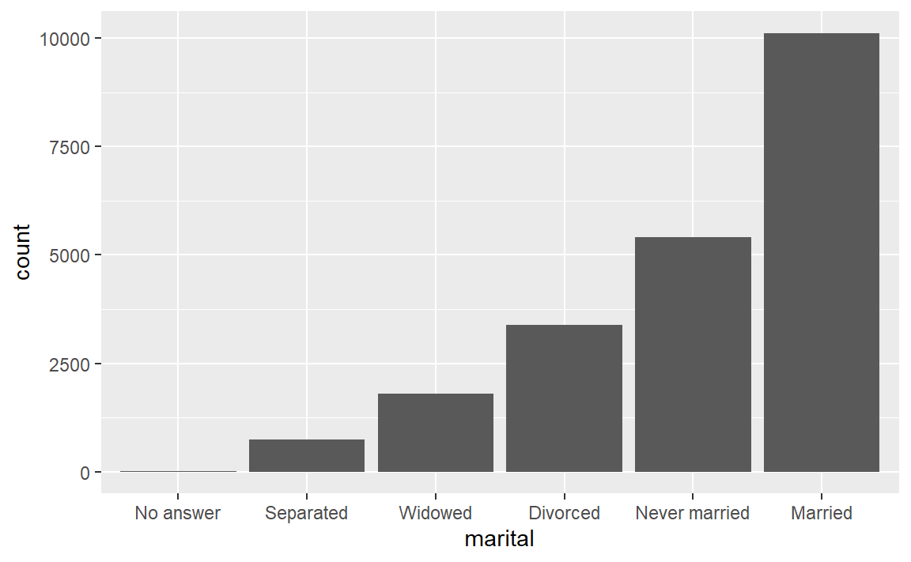

6.2 用法
主要介绍fct_reorder()，fct_infreq()，fct_relevel()等函数用法。
6.2.1 创建因子
使用 base R 中 factor函数创建因子。
x1 <- c("c事业部","a事业部","b事业部")
x2 <- factor(x1)
x3 <- factor(x1,levels = x1)
x2
#> [1] c事业部 a事业部 b事业部
#> Levels: a事业部 b事业部 c事业部
x3
#> [1] c事业部 a事业部 b事业部
#> Levels: c事业部 a事业部 b事业部通过观察发现因子x2,x3的顺序不一致。在我们做报表的时候，可以利用这个特性给事业部或者是别的类似字段指定因子水平达到排序效果。
当某水平因子未指定时，会被替换成NA,如下所示：
x4 <- c("d事业部","a事业部","b事业部")
factor(x1,levels = x4)
#> [1] <NA> a事业部 b事业部
#> Levels: d事业部 a事业部 b事业部创建因子想因子顺序和初始顺序一样，可以通过如下方式创建。
library(forcats)
x1 <- c("Dec", "Apr", "Jan", "Mar")
f2 <- x1 %>% factor() %>% fct_inorder()6.2.2 修改因子顺序
在我们作图时更改因子级别的顺序往往很有用，如下所示：
library(tidyverse)
#> -- Attaching packages --------------------------------------- tidyverse 1.3.1 --
#> v ggplot2 3.3.3 v purrr 0.3.4
#> v tibble 3.1.2 v dplyr 1.0.6
#> v tidyr 1.1.3 v stringr 1.4.0
#> v readr 1.4.0
#> -- Conflicts ------------------------------------------ tidyverse_conflicts() --
#> x dplyr::filter() masks stats::filter()
#> x dplyr::lag() masks stats::lag()
relig_summary <- gss_cat %>%
group_by(relig) %>%
summarise(
age = mean(age, na.rm = TRUE),
tvhours = mean(tvhours, na.rm = TRUE),
n = n()
)
ggplot(relig_summary, aes(tvhours, relig)) + geom_point()gss_cat 是 forcats 包自带数据集，展示的是宗教间每天看电视的平均小时数
根据绘制的图像，我们很难有效解释，因为图表是杂乱无序的。我们通过fct_reorder()重新指定因子水平使图表表达更加清晰。
ggplot(relig_summary, aes(tvhours, fct_reorder(relig, tvhours))) +
geom_point()fct_reorder()三个参数：
- .f:你想要调整因子水平的因子或者是字符向量
- .x:指定因子的水平
- .fun:可选的，当一个x对应多个f时的聚合函数，默认是
median
df <- tibble::tribble(
~color, ~a, ~b,
"blue", 1, 2,
"green", 6, 2,
"purple", 3, 3,
"red", 2, 3,
"yellow", 5, 1
)
df$color <- factor(df$color)
fct_reorder(df$color, df$a, min)
#> [1] blue green purple red yellow
#> Levels: blue red purple yellow green
fct_reorder2(df$color, df$a, df$b)
#> [1] blue green purple red yellow
#> Levels: purple red blue green yellow如果我们想看报告收入水平的平均年龄变化情况？
rincome_summary <- gss_cat %>%
group_by(rincome) %>%
summarise(
age = mean(age, na.rm = TRUE),
tvhours = mean(tvhours, na.rm = TRUE),
n = n()
)
ggplot(rincome_summary, aes(age, fct_reorder(rincome, age))) + geom_point()如果我们像之前一样更改收入的因子水平，但这并不是一个好的决定，因为收入在一般意义上已经有了顺序。但是，如果我们修改特殊的因子水平还是有意义的，如下：
ggplot(rincome_summary, aes(age, fct_relevel(rincome, "Not applicable"))) +
geom_point()fct_relevel()用法：
f <- factor(c("a", "b", "c", "d"), levels = c("b", "c", "d", "a"))
fct_relevel(f)
#> [1] a b c d
#> Levels: b c d a
fct_relevel(f, "a")
#> [1] a b c d
#> Levels: a b c d
fct_relevel(f, "b", "a")
#> [1] a b c d
#> Levels: b a c d
fct_relevel(f, "a", after = 2)
#> [1] a b c d
#> Levels: b c a dfct_infreq()用法：
gss_cat %>%
mutate(marital = marital %>% fct_infreq() %>% fct_rev()) %>%
ggplot(aes(marital)) +
geom_bar()
该系列函数功能是改变因子水平。
fct_inorder(): 以第一次出现的顺序为顺序fct_infreq():以每个因子出现的次数为顺序,数字大在前fct_inseq():以级别的数字为顺序
f <- factor(c("b", "b", "a", "c", "c", "c"))
f
#> [1] b b a c c c
#> Levels: a b c
fct_inorder(f)
#> [1] b b a c c c
#> Levels: b a c
fct_infreq(f)
#> [1] b b a c c c
#> Levels: c b a
f <- factor(1:3, levels = c("3", "2", "1"))
f
#> [1] 1 2 3
#> Levels: 3 2 1
fct_inseq(f)
#> [1] 1 2 3
#> Levels: 1 2 36.2.3 修改因子级别
前面我们通过函数修改因子顺序，我们还可以更改因子的级别。
gss_cat %>%
mutate(partyid = fct_recode(partyid,
"Republican, strong" = "Strong republican",
"Republican, weak" = "Not str republican",
"Independent, near rep" = "Ind,near rep",
"Independent, near dem" = "Ind,near dem",
"Democrat, weak" = "Not str democrat",
"Democrat, strong" = "Strong democrat"
)) %>%
count(partyid)
#> # A tibble: 10 x 2
#> partyid n
#> <fct> <int>
#> 1 No answer 154
#> 2 Don't know 1
#> 3 Other party 393
#> 4 Republican, strong 2314
#> 5 Republican, weak 3032
#> 6 Independent, near rep 1791
#> # ... with 4 more rowsfct_recode()用法：
x <- factor(c("apple", "bear", "banana", "dear"))
fct_recode(x, fruit = "apple", fruit = "banana")
#> [1] fruit bear fruit dear
#> Levels: fruit bear dearx <- factor(c("apple", "bear", "banana", "dear"))
levels <- c(fruit = "apple", fruit = "banana")
fct_recode(x, !!!levels)
#> [1] fruit bear fruit dear
#> Levels: fruit bear dear